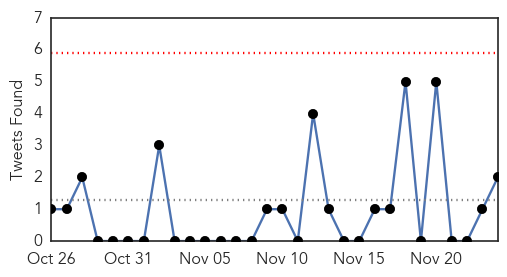

30 Day Trends
Web: 1 alerts, 1 warnings
Twitter: 1 alerts, 0 warnings
Top Articles:
- 0.994
- H5N1: Haiti: 64 cholera cases, 15 deaths in Anse-à-Pitres (updated)
- 0.982
- WHO vaccination campaign in Iraq
- 0.968
- Over 20 cases of jaundice reported in Mysuru
- 0.906
- Suspected cholera kills two in Bainet
- 0.684
- Learning from Jajarkot- Nepali Times
- 0.521
- Cholera-hit Tanzania cancels independence day celebration
Top Tweets:
- 0.684
- RT: Cholera killed 15 people and infected more than 60 in Anse A Pitre, in Haiti's southeast. https://t.co/OTgsPWswGh Hait…
- 0.657
- A classification of situations for 5 types of cholera epi & recommendations for use of cholera vaccine. https://t.co/OsTN44eXm2
- 0.601
- RT: Cholera in Haiti: 9,041 deaths have been registered, and more than 750,000 have been sickened in its grip https://t.co/sdfdEPxS…
Web/News Articles

Tweets
Article Locations

Article Confidences